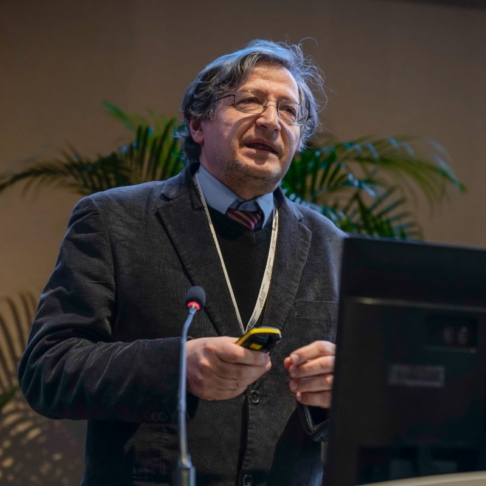

Causal Learning for Enhanced Chronic Disease Management and Interventions
Research Supervision Team
Prof. Hui Wang
Principal Supervisor
Queen's University Belfast
Dr. Chen Feng
Secondary Supervisor
Queen's University Belfast

Prof. Pietro Liò
External Supervisor
University of Cambridge
It is a great honor to work under such an inspiring and distinguished supervision team, whose expertise guides me throughout this journey.
Project Overview
Chronic diseases — long-term conditions that develop gradually and demand continuous, lifelong management rather than one-off treatment — have become the defining health challenge of our time. There is a growing call for more preventive action in public health interventions, and in their "2030 agenda for sustainable development" the World Health Organization has specifically addressed the need for preventing noncommunicable diseases (NCDs), the largest and fastest-growing group of chronic diseases. While modern public health care originally emerged in response to infectious disease epidemics, its focus has now shifted decisively toward the long-term management of these chronic conditions.
The World Health Organization defines noncommunicable diseases (NCDs) as chronic conditions caused by a combination of genetic, physiological, environmental and behavioural factors which can affect all age groups and countries. As such, NCDs sit at the very core of the global chronic disease burden, with the main types including cardiovascular diseases, cancers, chronic respiratory diseases and diabetes — all of which progress over years and require sustained monitoring, management and timely intervention.
The management of these chronic diseases represents an increasing burden on health care systems in Europe and worldwide. They are on the rise, and represent 86% of all deaths in Europe. Furthermore, across Europe there are major disparities in life expectancy with differences between EU member states of up to 7.7 years for women, and 11 years for men. Health care systems also have to deal with multimorbidity, due to both lifestyle choices and the inherent health issues of an aging population. It is precisely this challenge — enabling enhanced, data-driven chronic disease management and well-timed interventions — that this research sets out to address through causal learning.
AI in Healthcare
The health sector has been described as a key application area for Artificial Intelligence (AI) because of the richness and complexity of health data and the wish to improve the quality and efficiency of health care. There has as yet been very little research into the use of AI applications for patients or healthy citizens, although the technology may allow for a much more individual and person-centred approach regarding medical decision support. The core challenge is that most AI-based predictions lack explanations that allow for intuitive interpretation which is often needed to support decision making.
The rise of AI has led to a growing interest in developing more explainable models, especially causal models in healthcare. There is a growing demand for AI techniques that not only deliver reliable results, but are also trustworthy, transparent, interpretable, and explainable to human experts. To achieve this goal, methods and models are required to replicate and interpret the machine decision-making process, as well as to simulate and explain the learning and knowledge extraction processes.
Research Goals
- To develop novel structure learning algorithms to advance our understanding of the complex causal relationships underlying chronic diseases (NCDs)
- Enhance personalised treatment plans which could optimize resource allocation, and minimize the burden of chronic diseases on global health
- Create interpretable AI models that provide actionable insights for healthcare practitioners
- Develop frameworks for causal inference in longitudinal health data